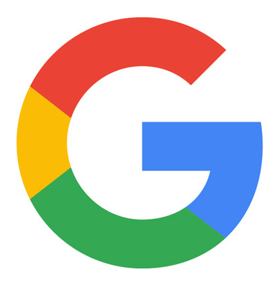
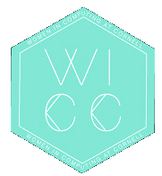
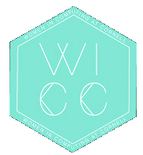
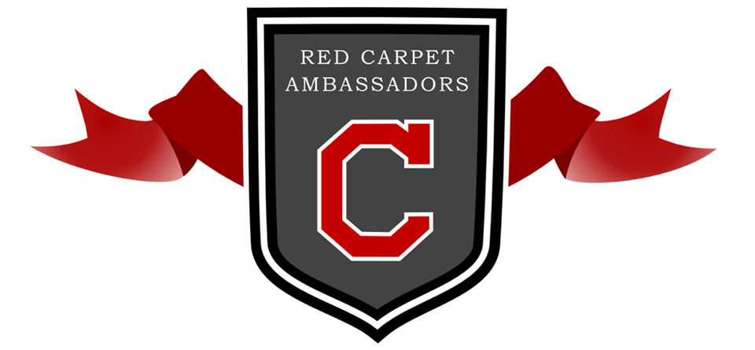
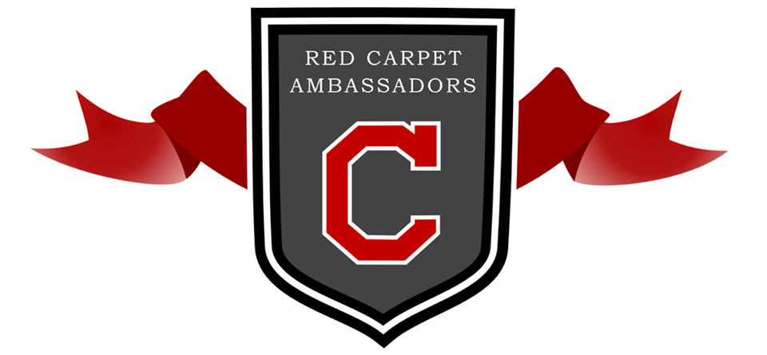
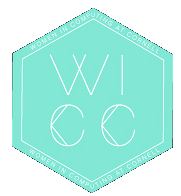
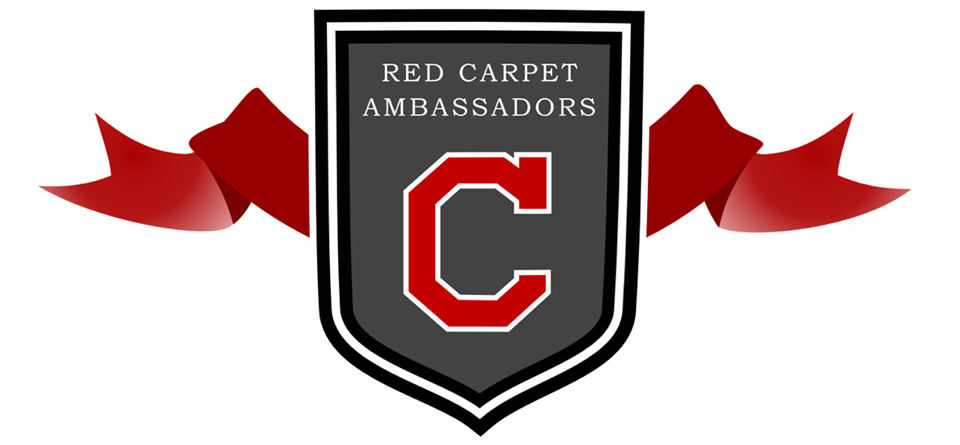

organizations
 
 
 

 work experience
-
Google
Software Engineer (07/2020 - Present)
-
Google
Software Engineering Intern (05/2019 - 08/2019)
- Built TF2OpenAPI, an Open Source, subsecond command-line tool in Go which outputs tailored OpenAPI specifications for prediction requests to TensorFlow models on model servers.
- Integrated TF2OpenAPI into Cloud AI Platform’s managed service to display sample payloads in the UI.
- Contributed to existing C++ and Java code to surface OpenAPI specifications.
-
Google
Software Engineer, Tools and Infrastructure Intern (05/2018 - 08/2018)
- Created a microservice for interacting with remote repositories to automate the release of 7+ Cloud products for the Cloud Release Engineering Team.
- Re-architected and extended the repository service from a monolithic release orchestration tool to a microservice, using Spring Boot, and migrated it to Kubernetes.
- Set up polling and event-driven models to track file and ref updates and emit change events with Cloud Pub/Sub.
-
Flex
Cloudlabs Intern (06/2017 - 08/2017)
- Imaged compute and storage servers using Stacki and wrote Ansible playbooks in YAML syntax to automate performance benchmarking for the servers, as well as Python code to parse results for validation.
- Automated installation of machine learning frameworks and benchmarking the time for training accurate models on various frameworks, namely Caffe2, Tensorflow, and CNTK.
campus involvement
-
Women in Computing at Cornell (WICC)
Co-President Advisor (12/2019 - 05/2020)
Co-President (12/2018 - 12/2019)
- Lead team of 4 VPs and 25 directors to achieve WICC's mission of making computing inclusive for all at Cornell and beyond.
Outreach Co-Director (08/2018 - 12/2018)
- Managed the weekly Girls Who Code chapter for middle school girls to foster confidence and interest in STEM.
Technical Director (07/2017 - 07/2018)
- Maintained the WICC website and developed a backend to streamline processes for updating the site.
- Revamped the resources page to provide career, personal, and academic guidance to women and other minorities.
- Added pages to publicize WICC's campaigns and strengthen outreach.
- Volunteered for the Girls Who Code class 2 hours each week in Spring 2018
Representative (10/2016 - 07/2017)
- Developed and designed a merchandise page for the website to foster a sense of team spirit and community.
Member (since 09/2016)
-
CS 5430 Course Staff
Graduate Teaching Assistant (01/2020 - 05/2020)
- Held office hours each week for 100+ students, gave input to professor on assignments, and graded homework.
-
CS 2112 Course Staff
Consultant (08/2018 - 12/2018)
- Held office hours each week for 80+ students, developed curriculum for weekly labs, gave feedback on design documents, and graded programming assignments.
-
Cornell University Unmanned Air Systems (CUAir)
Vision Subteam Member (09/2017 - 07/2018)
- A member of the student-run engineering project team, CUAir, working with computer vision.
- Implemented algorithms to preserve rotational invariance to classify alphanumeric targets in images.
- Added a full-stack geofencing feature to reduce false positives in the classification pipeline.
-
Association of Computer Science Undergraduates
Member (since 10/2016)
-
Red Carpet Society
Associate Ambassador (02/2017 - 08/2017)
- Present at the Admissions Office's information sessions and answer questions for prospective and admitted students.
Assistant Ambassador (09/2016 - 02/2017)
- Liaise between the Undergraduate Admissions Office and prospective and admitted students via hosting them and introducing them to Cornell.